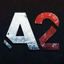
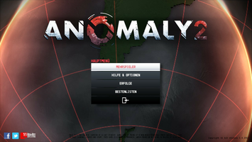
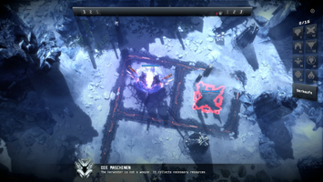
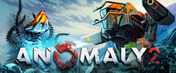

Anomaly 2
Dieser Artikel wurde für die folgenden Ubuntu-Versionen getestet:
Ubuntu 14.04 Trusty Tahr
Zum Verständnis dieses Artikels sind folgende Seiten hilfreich:

Anomaly 2  ist der Nachfolger von Anomaly Warzone Earth aus dem Hause 11 bit studios , welcher ebenfalls für Linux verfügbar ist. Neben den aus dem ersten Teil bekannten Spielelementen gibt es einen Multiplayer-Modus. Der Spieler kann auswählen: Entweder übernimmt er die Kontrolle über die Türme und versucht den gegnerischenn Spieler daran zu hindern diese mit den Fahrzeugen zu zerstören oder befreit die Erde von diesen außerirdischen Bauwerken.
ist der Nachfolger von Anomaly Warzone Earth aus dem Hause 11 bit studios , welcher ebenfalls für Linux verfügbar ist. Neben den aus dem ersten Teil bekannten Spielelementen gibt es einen Multiplayer-Modus. Der Spieler kann auswählen: Entweder übernimmt er die Kontrolle über die Türme und versucht den gegnerischenn Spieler daran zu hindern diese mit den Fahrzeugen zu zerstören oder befreit die Erde von diesen außerirdischen Bauwerken.
Das Spiel kann mit der Tastatur oder einem Controller gespielt werden.
|  |  |
| Hauptmenü | Tutorial |
Installation¶
Entwicklerseite¶
Nach dem Kauf des Spiels von der Entwicklerseite , welcher über den Humble Store abgewickelt wird, erhält man einen Link zur persönlichen Seite. Auf dieser wird ein Key für Steam zur Verfügung gestellt.
Steam¶
Nachdem den Spieltitel im Steam Shop oder den Client erworben hat kann es anschließend über letzteren installiert [1] werden.
Problemlösungen¶
Spielsprache¶
Um die Sprache des Spiels zu ändern wählt man diese im Menü über "Help & Options -> Settings -> Language" aus.

Infobox¶
| Anomaly 2 | |||
| Genre: | Strategie | ||
| Sprache: |      | ||
| Veröffentlichung: | 2013 | ||
| Publisher: | 11 bit studios | ||
| Minimale Systemvoraussetzungen: | Intel(R) Core(TM)2 Duo 2.4, AMD Athlon(TM) X2 2.8 Ghz Prozessor / 512 MB+ Grafikkarte (z.B. Geforce 9600 GS / Radeon HD4000) / 2GB Festplattenspeicher | ||
| Strichcode / EAN / GTIN: | - | ||
| Medien: | Download | ||
| Läuft mit: | nativ | ||

- Erstellt mit Inyoka
-
 2004 – 2017 ubuntuusers.de • Einige Rechte vorbehalten
2004 – 2017 ubuntuusers.de • Einige Rechte vorbehalten
Lizenz • Kontakt • Datenschutz • Impressum • Serverstatus -
Serverhousing gespendet von